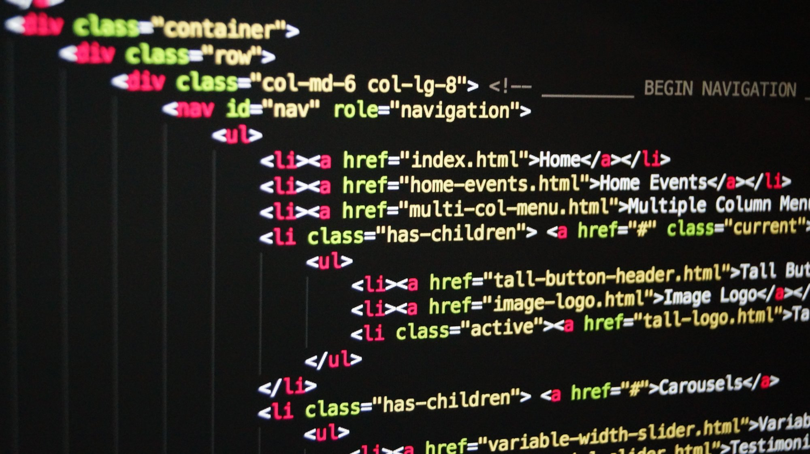

Första posten: Vad är code?
Så vad är code?Code är det en programerare skriver, för att du som läsare ska kunna läsa det som du vill läsa. Det här som jag skriver nu är code, kan man säga på sett och vis. Men om man pratar om code gänerält så pratar man om olika variablar. variablar är det vi programerare skriver i för att kunna vissa olika saker på hemsidan. jag skriver det här i en paragrahp då använnder man sig av ett komand som heter >p> fast med den första plien på rätt håll.
code är det bästa som finns i värden! jag hoppas ni lär er cola saker på den här blogen.